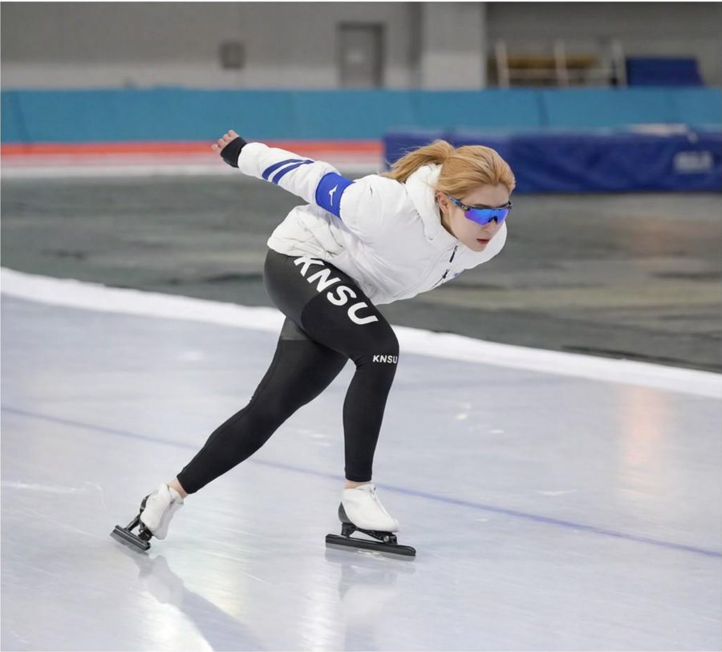
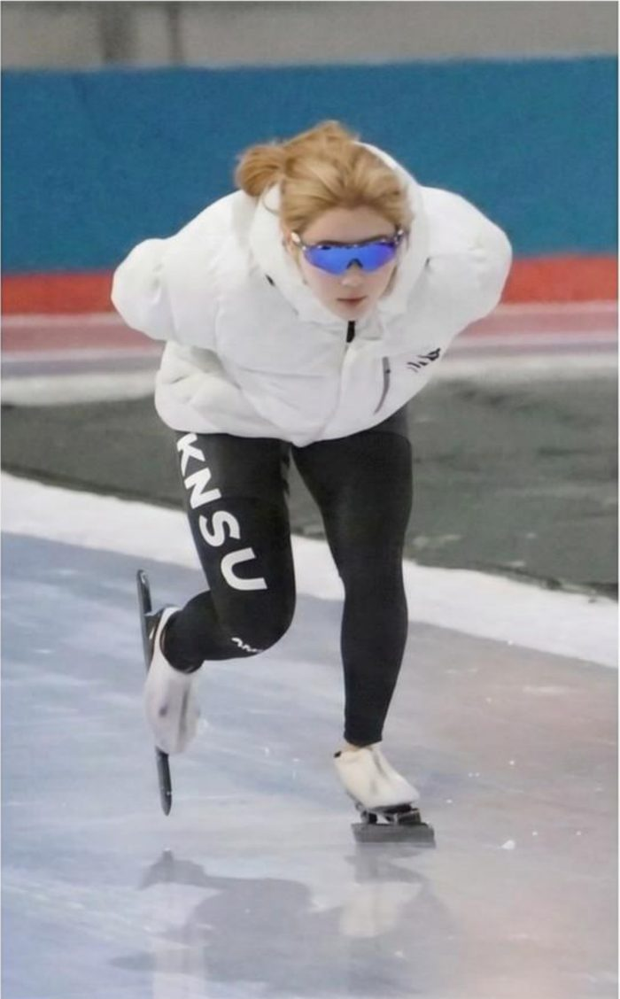
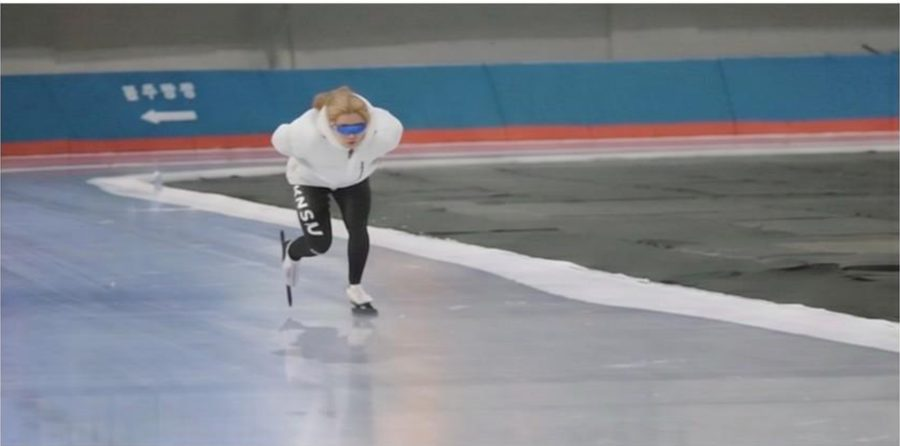
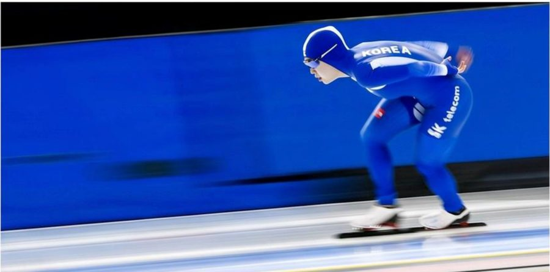
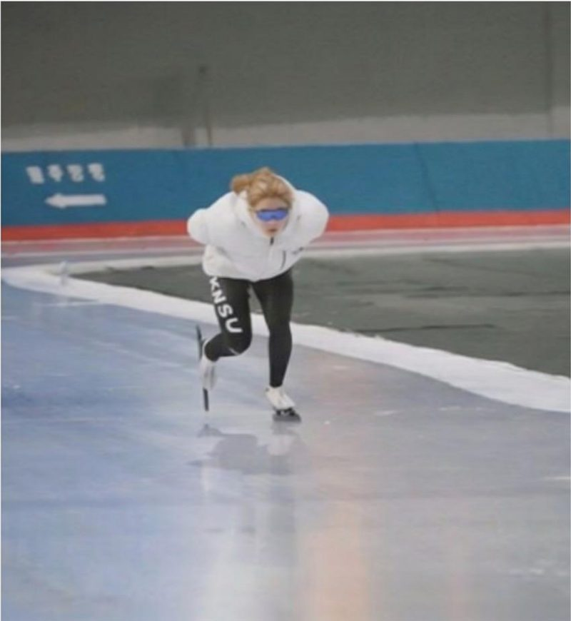

Ph.D. Candidate, Sport Biomechanics
Motion Innovation Center
Korea National Sport University

"I do not aspire to be a researcher who simply publishes scientific papers.
I aspire to research that creates meaningful and tangible benefits for people's lives."

I am Jung-Min Yoon, a Ph.D. student in Biomechanics at Korea National Sport University (KNSU). I currently conduct research at the Motion Innovation Center under the supervision of Prof. Sang-Kyoon Park, focusing on the biomechanical characteristics of human movement.
My work spans sports biomechanics, gait analysis, wearable sensor technologies, and digital health, with the goal of improving athletic performance, preventing falls, and promoting health and well-being.


Twelve years of competitive skating shape how I see, measure, and model human movement today.
Where elite-sport biomechanics meets everyday movement and emerging sensing technology.
Performance analysis of elite athletes through 3D motion capture and force-plate measurement.
Lower-limb kinematics, kinetics, and inter-joint coordination across ages and terrains.
Smartwatch, EEG, and IMU-based assessment of movement and physiology beyond the laboratory.
Data-driven systems for fall prevention, gait training, and quality-of-life improvement.
From competitive ice skater to biomechanist — eight years and counting, one institution.
Department of Physical Education, Ice Skating Major
Sport Biomechanics, Motion Innovation Center
Sport Biomechanics, Motion Innovation Center
Applied biomechanics work conducted as a research assistant at the Motion Innovation Center.
Physiological and biomechanical functional verification — Research Assistant
Fit and biomechanical outcome assessment — Research Assistant
Effects of cadence cueing on selective attention and gait — Research Assistant
Development of on-demand customized insole system — Research Assistant
Two peer-reviewed journal articles — translating laboratory biomechanics into the published record.
Biomechanical changes across repeated strokes during slide-board training — Korean Journal of Sport Science, Vol. 35, pp. 401–411
Do lower-limb joint kinetics drift across consecutive slide-board strokes in elite sprint speed skaters?
3D motion capture and inverse dynamics — first, middle, and last strokes compared across the training set.
Ankle plantarflexion moment and knee/hip extensor moments progressively decline from First to Last strokes — quantifying within-session neuromuscular drift in elite skaters.
Biomechanical effects of foot-direction angle on lower-limb joints during side-step cutting — Sports Science, Vol. 43, p. 327
Ankle dorsiflexion/plantarflexion angle and moment, knee/hip flexion-extension moment, and side-step phase time all shift with toe-in and toe-out stance.
Ankle and knee angle, moment, and power responses reorganize depending on foot-direction condition during push-off.
Foot angle set with a digital protractor across Neutral, Toe-in, and Toe-out conditions, with a fixed 240 cm side-step distance.
Lower-extremity biomechanics and inter-joint coordination during downhill walking in younger versus older women.
How do lower-extremity joint kinematics, kinetics, and inter-joint coordination differ between younger and older women during downhill walking?
Instrumented split-belt treadmill at controlled downhill grade, full-body 3D motion capture, EMG, force plates, paired younger and older female cohorts.
Joint-level age effects on ankle, knee, and hip during the downhill weight-acceptance phase; inter-joint coordination variability as a fall-risk indicator.
From raw motion capture to published findings — measurement and analysis across the biomechanics pipeline.
3D MOTION CAPTURE
FORCE PLATES / EMG
IMU / SMARTWATCH
EEG
VISUAL3D
MATLAB
INVERSE DYNAMICS
KINEMATIC COUPLING
PUBLICATION
APPLIED INSIGHT
Building evidence-based tools for fall prevention and personalized gait training.
A Study on the Improvement of Gait Stability and Neurophysiological Function in Middle-Aged Adults Using Wearable Devices and Virtual Reality Systems.
National Research Foundation of Korea — Doctoral Research Grant in Humanities and Social Sciences, 2-year program.
Build evidence-based strategies for fall prevention and personalized gait training before age-related decline becomes severe.
Compare gait between young and middle-aged adults across flat ground, uneven terrain, and visually distracting environments. Wearable smartwatch + EEG measurements.
Introduce real-time visual feedback through head-mounted VR and measure its effect on gait stability and neurophysiological response.
Translating biomechanics and wearable technology into real-world tools for human movement.
I aspire to be a researcher whose findings are not only published, but lived.
Three populations, one mission — research engineered to leave the lab and meet real lives.
Fall prevention, gait training, and personalized mobility assessment before age-related decline becomes severe.
Rehabilitation-engineering tools that move beyond clinical visits into daily-life monitoring and intervention.
Assistive movement technologies that increase independence, safety, and participation in everyday activities.
Research should not stop at the laboratory door — it should reach the people whose lives it can change.

I welcome collaborations across biomechanics, wearable technology, and digital health.
From elite ice to everyday mobility — thank you.